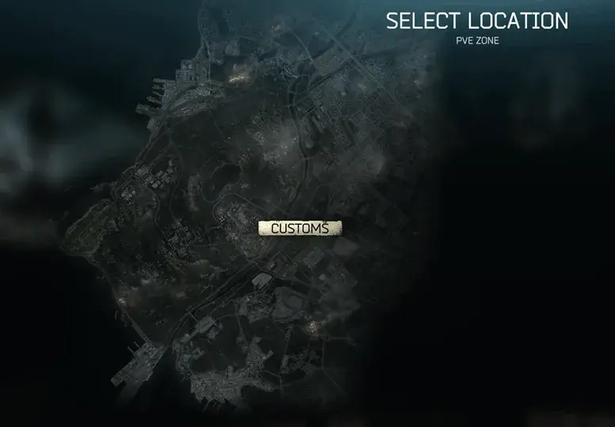
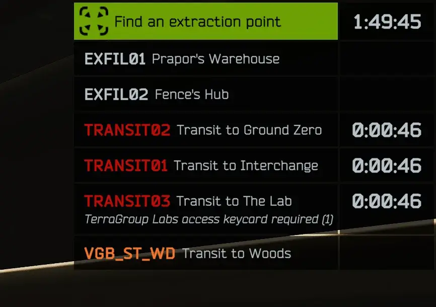
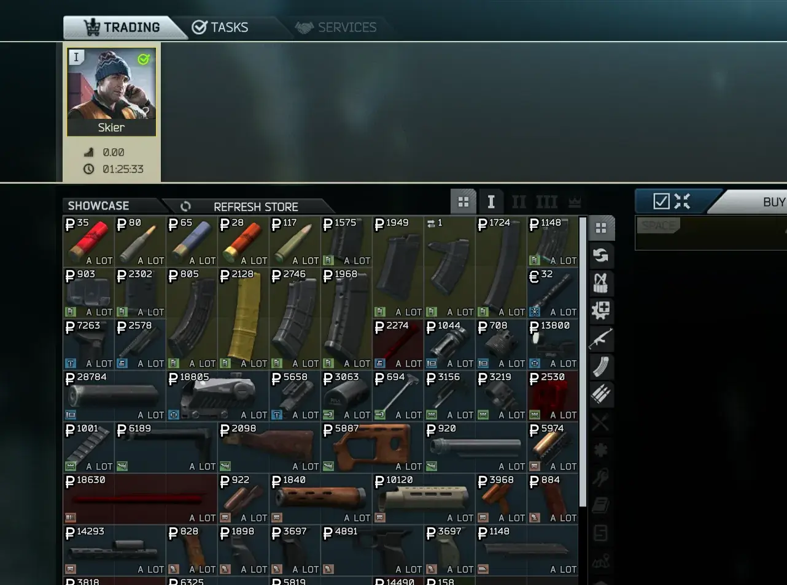
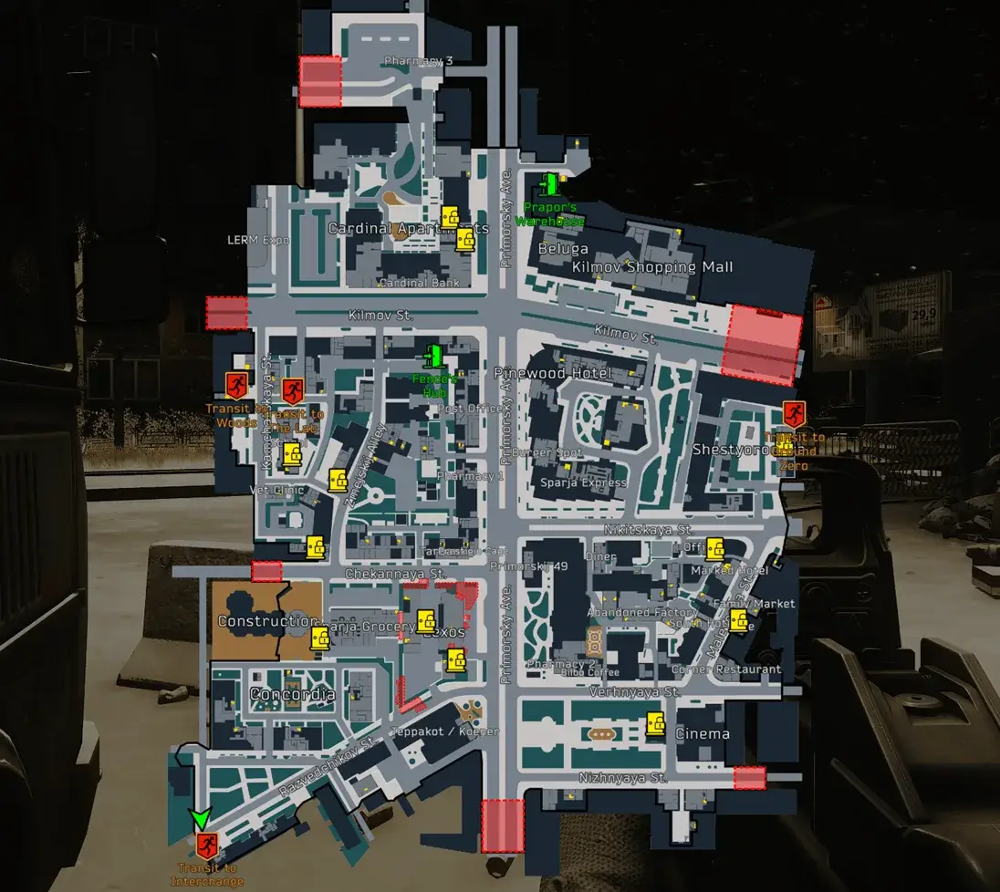

Vagabond
- Downloads
- 4,342
- Favourites
- 36
- Mod lists
- 27
Vagabond is a gameplay overhaul mod, which aims to turn Tarkov into an open world game.
You start with limited money to buy a simple loadout from Fence, with some meds if you are lucky, and your challenge is now to survive. Using only transits to move around Tarkov and specific extracts to get access to traders.
The only way you can extract is using extracts specifically to get access to traders or your own hideout; You otherwise move through maps, using an expanded selection of transits, as if the game was open world.
Heavily inspired by Path To Tarkov
If you want to see the trader locations, click here.
Custom Trader Support
Since 0.6.0 custom traders are no longer ‘officially’ added to vagabond. They are fully supported if you add them yourself via the config or the mod authors add an integration. But there will be no custom traders exfils added directly in vagabond. To add traders to existing exfils is quite easy via the configs
ABPS Compatibility
0.7.1 was tested with ABPS 2.0.19, and a graceful failover is added if the patch could not be applied. ABPS is going through what looks like a rewrite so expect incompatibility.
Using SVM?
Disable the Raid Settings tab completely, it even being enabled is enough to cause conflicts, regardless of whether or not you changed anything within the tab. - Thank you _liquidrage!
Does Quests Work
They should. If its a quest which requires specific extractions, those will be available only when you have the quest(s). Using such extraction will take you back to the quest giver. Do let me know if I missed any quests / if you find any quests you cannot complete.
Main Features
- Place your hideout entrance anywhere (Press CTRL+P in raid to place your hideout entrance, if you use Fika, other players can use your hideout exit as well)
- Per-trader (and hideout if playing with friends) stash
- Use trader specific extractions to get access to their shop.
- Recruit traders into your hideout
- Custom extractions and transits
- Remember last exit/transit location
- Reduce raid loot if you repeat the same raid
- Modding API
Remember Raid Position

Custom Extractions, Transits and Infil locations

Trader Specific Extractions

Dynamic Maps Compatibility

Any mod which makes changes to Extractions, Transits or player spawning (Like selectable entry mod or interaction mods), will likely conflict with this mod and prevent extracts from working.
Labyrinth has not been tested with this mod.. but.. should hopefully work.
- Download the latest version
- Extract and copy the
SPT\user\mods\Vagabondfolder toSPT\user\modsand theBepInEx\plugins\VagabondtoBepInEx\plugins. - If you use Headless clients, you will need to add the client plugin to the headless spt client as well.
- Create a new profile, and it will get enrolled as a new Vagabond.
Configs live in SPT/user/mods/Vagabond/config/. Restart the SPT server after edits.
Disclaimer: Documentation is generated using a LLM.
Configs Questions
- How do I add a custom trader?
- How do I add a trader to my hideout?
- How do I add a custom trader exfil?
- How do I add a transit?
- How do I add item requirements to a transit/exfil?
- How do I add a currency cost (v-ex style) to exfils/transits?
Modding API Questions
- How do I integrate my custom trader with Vagabond?
- How do I add a custom exfil for my trader?
- How do I make my trader available in the player’s hideout?
- How do I add custom transits with requirements and cost?
- How do I change a player’s Vagabond state?
Troubleshooting
- My custom extract is not appearing - why?
- Cost requirement says insufficient funds, but I have the money
Configs
- Core config - core mod settings (
vagabond.json) - Exfils - extracts + transits
- Transitions - vanilla SPT transit landing spots
- Traders - which extract unlocks which trader
- Modding API - For modders to integrate their own exfils, transits and traders.
- Dev Keybinds - dump hotkeys (F8/F9/F10) for creating exfils/transits, useful for updating configs or modding.
View Full Size
If you want to see the trader locations, click here.
See knows issues/limitations with each released version. Below are other general issues/limitations across all versions:
- SVM Extracts settings will cause conflicts, like preventing extractions etc.
- (Fika) If one of your teammates die and you use a transit after, the game will get stuck. I don’t think this is a mod issue however.
- (Fika) the spawn-in location and loot amount is determined by the player who initiates the game.
- Hideout exfils persist until server restart. Other players will be able to use them as extracts until then.
Trap, for the original PTT mod, serving as strong inspiration.
Sacrificial Lamb, for testing a lot of cross compatibility between Vagabond, other mods and SVM settings on the initial release.
DanW, for the Hardcore Rules mod which I nicked some patches from.
GhostFenixx, for the SVM mod which I also nicked some patches from.
acidphantasm for the item limits begone mod, which I also nicked some code from.
If you feel utterly compelled to say thanks and you feel a comment is not enough (it is, honestly), you can become an enabler of my caffeine addiction; however only when you literally have nothing else to spend your shillings and shekels on, I am serious.
Version
0.7.1
Fixes
- Issues with quests which adds traders to your hideout
- Having access to hideout stash from “plain” transits/exits (eg when using “stay” in “OnDeathGoTo”)
- Add missing rep requirement for starting Therapist “add to hideout” quest.
- Added compatibility with ABPS 2.0.19, should be somewhat backward compatible.
Features
- Quests for adding traders to your hideout have been moved to configs
Changes
- “add to hideout” quests which needed ammo have been changed to require ammo boxes instead of plain ammo.
- Relocation quest fee has been moved from the vagabond.json config file to the quests own config file
- “Add trader to hideout” quest loyalty requirements has been moved from the vagabond.json config file to the quests own config files
Known Issues / Limitations / Notes
- The size of “Virtual Stashes” is the same as your profile’s main stash size.
- When placing a hideout exfil, once it appears you will have to move to trigger the extraction to start.
- Hideouts, when initially placed, won’t show on Dynamic Maps until you leave the raid and come back.
- Hideout exfils persist until server restart. Other players will be able to use them as extracts until then.
- Headless clients can get stuck and wont reset between raids - unable to consistency reproduce making it hard to debug.
Version
0.7.0
Fixes
- Hideouts not getting reset on profile reset
Features
- Added
ForceGroundZeroHighconfig option. When enabled, will force the harder Ground Zero variant regardless of player level. - Added a cost option to exfils, like v-ex, you can specify the cost of using an exfil.
API
- Added Hideout Traders API endpoints - you can now add/remove traders available in a players hideout.
Changes
- If your
OnDeathGoTofails for any reason, it will default to ‘stay’ and notify you via in game mail. ConsecutiveMapLootReductionRaterenamed toConsecutiveMapLootRetentionRatefor clarity (Thanks valphi-dev!)ConsecutiveMapLootReductionMinrenamed toConsecutiveMapLootRetentionMinfor clarity (Thanks valphi-dev!)
Known Issues / Limitations / Notes
- The size of “Virtual Stashes” is the same as your profile’s main stash size.
- When placing a hideout exfil, once it appears you will have to move to trigger the extraction to start.
- Hideouts, when initially placed, won’t show on Dynamic Maps until you leave the raid and come back.
- Hideout exfils persist until server restart. Other players will be able to use them as extracts until then.
Version
0.6.1
Apologies for the rapid-fire releases, i normally let a release cook for a bit but some fairly large bugs surfaced which I felt had to be resolved asap.
See changelog for 0.6.0, it has a lot of information regarding the latest big update.
Fixes
- Traders not being able to share the same exfil
- Repeatable quests causing crashes due to traders being locked instead of just disabled.
Changes
- Virtual stashes have been re-keyed to use the exfil identifier instead of the trader id. A migration is in place which will move all trader stashes to use the exfil identifier instead.
- Shared custom trader exfil has been removed.
- Custom traders are no longer ‘officially’ added to vagabond. They are fully supported if you add them yourself via the config or the mod authors add an integration. But there will be no custom traders exfils added directly in vagabond.
Known Issues / Limitations / Notes
- The size of “Virtual Stashes” is the same as your profile’s main stash size.
- When placing a hideout exfil, once it appears you will have to move to trigger the extraction to start.
- Hideouts, when initially placed, won’t show on Dynamic Maps until you leave the raid and come back.
- Hideout exfils persist until server restart. Other players will be able to use them as extracts until then.
Version
0.6.0
A lot of new configs have been added server-side, make sure they are copied over, or you wont see any transits, traders etc. I recommend replacing existing config(s) and going through it again.
Custom traders, with the next patch, I will be removing the custom traders as a direct integration, as you can add traders via configs and API now - this is to avoid conflicting with modders own integrations and players own configs as well. So empty the custom traders virtual stash on Reserve before then.
Fixes
- Quests localisation, it should now default to ‘en’ if no translations exists for your chosen language.
Features
- Consecutive Map Loot Reduction - The more times you play the same map consecutively, the less loot it has (configurable)
- Added
HealthOnDeathwhich allows you to set the health % of your limbs when you die. - All traders, exfils and transits are now configurable, see new config files in the server mod folder.
- Modding API - its basic but should allow other mods to integrate with Vagabond like exfils, transits, traders etc. If there are any API’s you would like to see (specifically for vagabond) let me know. I have made a simple example mod which uses the API here
Changes
OnDeathGoToconfig option has been changed.StarterFenceconfig option has been replace withStartRaidandStartExfilIdentifier- Custom traders are no longer ‘officially’ added to vagabond. They are fully supported if you add them yourself via the config or the mod authors add an integration. But there will be no custom traders exfils added directly in vagabond.
Known Issues / Limitations / Notes
- The size of “Virtual Stashes” is the same as your profile’s main stash size.
- When placing a hideout exfil, once it appears you will have to move to trigger the extraction to start.
- Hideouts, when initially placed, won’t show on Dynamic Maps until you leave the raid and come back.
- Hideout exfils persist until server restart. Other players will be able to use them as extracts until then.
Version
0.5.2
Fixes
- wrong infil location when going from woods to customs
- not being able to access BTR mail attachments
Changes
- A “defensive” check has been added which forces exfils to be active and enabled in case of another mod throwing an error which could prevent Vagabond’s patch from finishing. This is likely to fix the dynamic maps and exfil issue some people experienced. (Thank you Chazut for helping me test and debug this!)
Known Issues / Limitations / Notes
- The size of “Virtual Stashes” is the same as your profile’s main stash size.
- When placing a hideout exfil, once it appears you will have to move to trigger the extraction to start.
- Hideouts, when initially placed, won’t show on Dynamic Maps until you leave the raid and come back.
- Hideout exfils persist until server restart. Other players will be able to use them as extracts until then.
Version
0.5.1
Fixes
- being able to access trader mail without being at a trader
- config not being read on *nix systems. It will now also log and error when that is the case. (Credit: int16 & Lord-S-E-C)
- IsNewCharacter state flag not getting cleared
Features
- added config option to choose whether to limit access to trader mail attachments based on location or not.
Changes
- IMPORTANT: the config dir
SPT\user\mods\Vagabond\configis now lowercased, double check you only have one config dir and if you have two, keep only the lowercased dir.
Known Issues / Limitations / Notes
- The size of “Virtual Stashes” is the same as your profile’s main stash size.
- When placing a hideout exfil, once it appears you will have to move to trigger the extraction to start.
- Hideouts, when initially placed, won’t show on Dynamic Maps until you leave the raid and come back.
- Hideout exfils persist until server restart. Other players will be able to use them as extracts until then.
Version
0.5.0
A lot of moving parts to this release, so do let me know if you encounter any issues. The quests to get traders into your hideout is meant to take some effort without it being too RNG. Do let me know how you get on with them after a bit.
Fixes
- OnDeathGoTo config option not working properly.
- AddFenceToHideout config option not working properly.
- Incompatible versions of ABPS will no longer crash the mod, it will just throw an error into the log and continue.
Features
- Added repeatable quest to Skier, which allows you to relocate your hideout - for a fee (configurable). I recommend disabling “AllowHideoutRelocation” in your config with this feature out.
- Added a quest to each trader, which upon completion adds that trader to your hideout. Quests becomes available at LL2 (configurable).
- Items will now maintain their FIR status if when you visit Traders, as long as you take the items with you when you leave again.
- Added “ShareHideoutExits” config option - gives you access to your hideout if you use someone else’ hideout exfil.
Changes
- You can no longer accept mail attachments from traders if the trader is not available your current location.
- Removed obsolete “FixProfiles” config option
- Remove dev key mappings from the client F12 menu
Known Issues / Limitations / Notes
- The size of “Virtual Stashes” is the same as your profile’s main stash size.
- When placing a hideout exfil, once it appears you will have to move to trigger the extraction to start.
- Hideouts, when initially placed, won’t show on Dynamic Maps until you leave the raid and come back.
- Hideout exfils persist until server restart. Other players will be able to use them as extracts until then.
Version
0.4.0
Fixes
- compatibility with ABPS 2.0.15
- extracting from factory night map prevents you from entering factory again
- trader screen freezing/preventing going back when there are no traders.
- respawning in hideout on death potentially not working.
- starter money was not added to the stash on profile reset.
- secret extracts showing up (regression since the quests fix)
- hideout placements in coop games. Everyone should be able to place their own hideouts not and not move the host’s hideout location.
- hideout location error using wrong location name
Features
- added config options
EnableVirtualStashesfor enabling/disabling virtual stashes - added config option
WipeVirtualStashesOnRaidEntryto wipe virtual stashes on raid entry - added config option
HealStatusEffectsOnDeathto clear status effects on death (like heavy bleeds, broken limbs etc) - added config option
AllowPostRaidHealingto allow post-raid healing at Therapist (requires money left at the Therapist if virtual stashes is enabled). - added config options
AddFenceToHideoutwhich allows Fence to be accessed in the hideout. - added config option
MailAttachmentLimitwhich allows you to change when players can mail items between each other
Changes
- improve blocked action error for virtual stashes.
- added “therapist” as an OnDeathGoTo option.
- “StripMailAttachments” config option is now “MailAttachmentLimit”
Known Issues / Limitations
- No longer compatible with ABPS 2.0.14 (and older) since 0.4.0
- The size of “Virtual Stashes” is the same as your profile’s main stash size.
- When placing a hideout exfil, once it appears you will have to move to trigger the extraction to start.
- Hideouts, when initially placed, won’t show on Dynamic Maps until you leave the raid and come back.
- You can only place your hideout once, unless you update the config to allow relocation (This config option is likely to be removed when I add a proper relocation system).
Notes
- Hideout exfils persist until server restart. Other players will be able to use them as extracts until then.
Version
0.3.4
Fixes
- hermertic door exfil on reserve
- loosing your legs on some infils
- on death, being placed at the wrong infil when set to “stay”
- remove limit to what items you can bring into raid (Credit: acidphantasm)
Changes
- Changed config option “PermaDeath” to “ResetOnDeath” to better describe what it does.
Features
- Add config option to choose which Fence to start at (Lighthouse or Streets)
Known Issues / Limitations
- The size of “Virtual Stashes” is the same as your profile’s main stash size.
- When the trader screen is blank, like in hideouts, it can sometimes overlay the other menus. Work around: Press the back button (top right) to close the trader UI.
- When placing a hideout exfil, once it appears you will have to move to trigger the extraction to start.
- Hideouts, when initially placed, won’t show on Dynamic Maps until you leave the raid and come back.
- You can only place your hideout once, unless you update the config to allow relocation (This config option is likely to be removed when I add a proper relocation system).
Notes
- Hideout exfils persist until server restart. Other players will be able to use them as extracts until then.
Version
0.3.3
Fixes
- items loose FIR when transitioning between maps
- immediate extraction on spawn in
- fixed missing Fence exfil on Lighthouse
- further improved the exfil creation which hopefully resolves the delayed exfil spawning.
- remove item restrictions from backpacks (Credit: GhostFenixx - SVM mod)
- remove in-raid item drop restrictions (Credit: GhostFenixx - SVM mod)
Known Issues / Limitations
- The size of “Virtual Stashes” is the same as your profile’s main stash size.
- When the trader screen is blank, like in hideouts, it can sometimes overlay the other menus. Work around: Press the back button (top right) to close the trader UI.
- When placing a hideout exfil, once it appears you will have to move to trigger the extraction to start.
- Hideouts, when initially placed, won’t show on Dynamic Maps until you leave the raid and come back.
- You can only place your hideout once, unless you update the config to allow relocation (This config option is likely to be removed when I add a proper relocation system).
Notes
- Hideout exfils persist until server restart. Other players will be able to use them as extracts until then.
Version
0.3.2
Fixes
- Virtual stashes not getting cleared on profile reset.
- Added (improved) ABPS compatibility. (likely the issue with PMCs/npcs not spawning properly)
Known Issues / Limitations
- The size of “Virtual Stashes” is the same as your profile’s main stash size.
- When the trader screen is blank, like in hideouts, it can sometimes overlay the other menus. Work around: Press the back button (top right) to close the trader UI.
- When placing a hideout exfil, once it appears you will have to move to trigger the extraction to start.
- Hideouts, when initially placed, won’t show on Dynamic Maps until you leave the raid and come back.
- You can only place your hideout once, unless you update the config to allow relocation (This config option is likely to be removed when I add a proper relocation system).
Notes
- Hideout exfils persist until server restart. Other players will be able to use them as extracts until then.
Version
0.3.1
Fixes
- Quests which required a specific exfil can now be completed (if you find any which can’t let me know)
- Inconsistency with exfils/trader exfils not always working/showing (hopefully resolved/improved)
Changes
- Disable post-raid treatment (Credit: DanW/Hardcore Rules)
- Completing quest extractions should take you to the quest giver when you extract.
Known Issues / Limitations
- The size of “Virtual Stashes” is the same as your profile’s main stash size.
- When the trader screen is blank, like in hideouts, it can sometimes overlay the other menus. Work around: Press the back button (top right) to close the trader UI.
- When placing a hideout exfil, once it appears you will have to move to trigger the extraction to start.
- Hideouts, when initially placed, won’t show on Dynamic Maps until you leave the raid and come back.
- You can only place your hideout once, unless you update the config to allow relocation (This config option is likely to be removed when I add a proper relocation system).
- Virtual/trader stashes not getting wiped on profile reset (fixed in 0.3.2)
Notes
- Hideout exfils persist until server restart. Other players will be able to use them as extracts until then.
Version
0.3.0
Features
- Traders, and any other place where you extract which is not your hideout, now have their own stash.
- You can now choose where to place your hideout entrance on any map using CTRL+P (not tested on labs or labyrinth).
- You can now choose where you go when you die. Hideout, Fence or last location (last exfil).
Changes
- Scav runs are now disabled (Credit: DanW/Hardcore Rules)
- Extraction areas have been reduced.
- Removed legacy config option “AlsoWipeCarriedMoneyOnFirstRaid”.
- Custom traders will now show up in a specific extract on Reserve.
Fixes
- Exfils and how they are loaded in has been updated and should hopefully make issues with exfils not appearing/working a non-issue now.
Known Issues / Limitations
- The size of “Virtual Stashes” is the same as your profile’s main stash size.
- When the trader screen is blank, like in hideouts, it can sometimes overlay the other menus. Work around: Press the back button (top right) to close the trader UI.
- When placing a hideout exfil, once it appears you will have to move to trigger the extraction to start.
- Hideouts, when initially placed, won’t show on Dynamic Maps until you leave the raid and come back.
- You can only place your hideout once, unless you update the config to allow relocation (This config option is likely to be removed when I add a proper relocation system).
Notes
- Hideout exfils persist until server restart. Other players will be able to use them as extracts until then.
Version
0.2.1
Fixes
- Trader UI locking up / becoming inaccessible
Version
0.2.0
What’s Changed
Pivoted Vagabond to be an open world game overhaul, heavily inspired by features of PTT. Thanks everyone for bringing PTT to my attention - I was not sure at first however I am on board now.
This is a massive refactor, I recommend creating a new profile for this one.
Features
- Remember raid location and transition
- Custom transits and infil positions
- Raid/extract based trader access